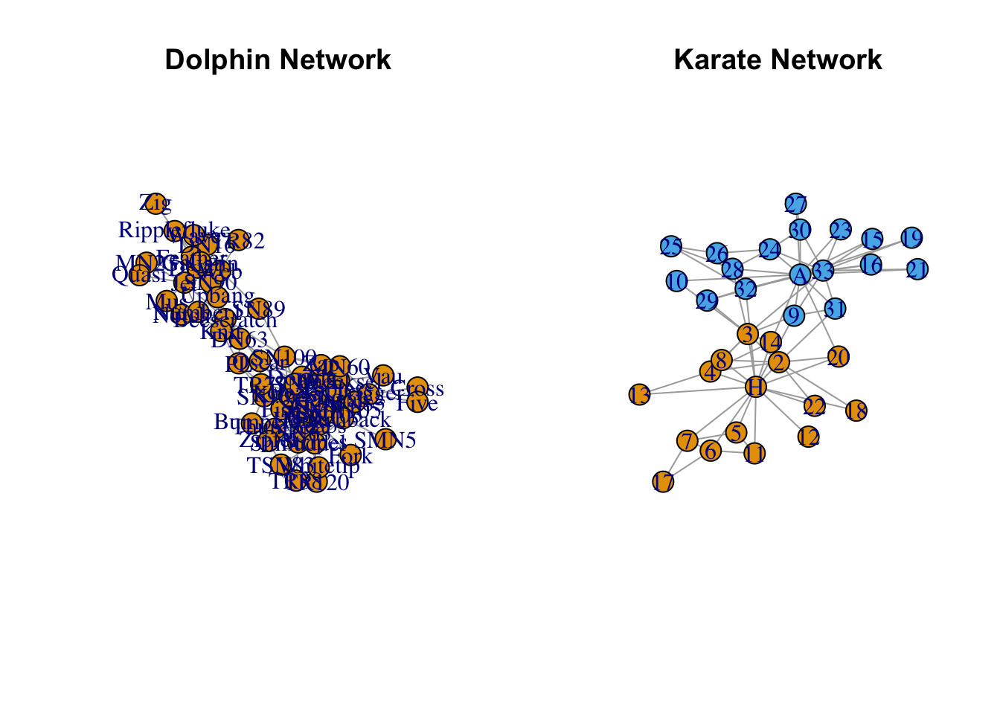
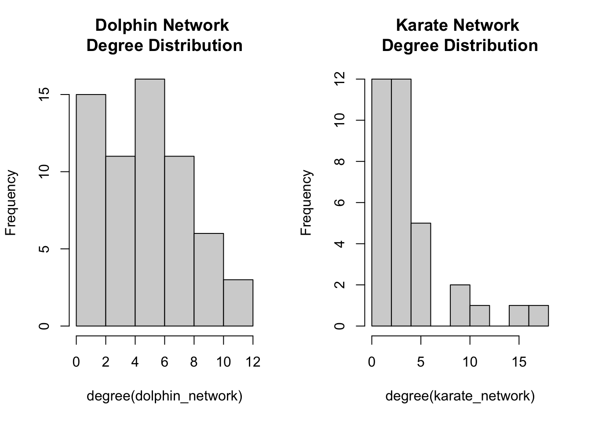
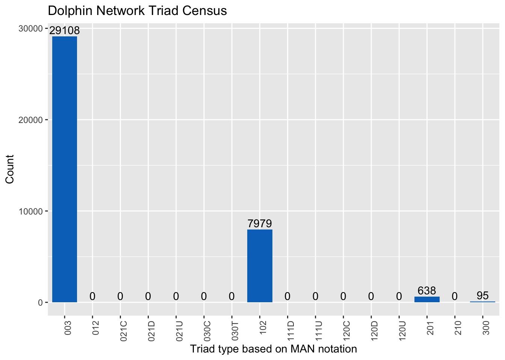
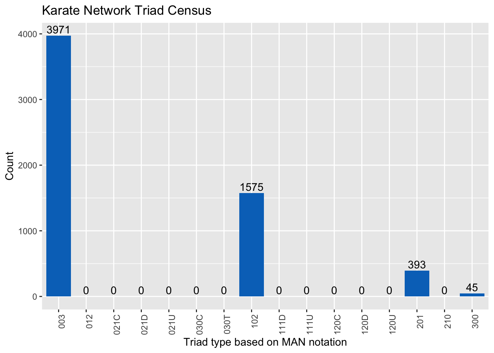

Analysis Walkthrough
The following is an analysis I completed for DNSC4233, Social Network Analytics.
Dolphin and Karate Network Analysis
Introduction
The dolphin network comes from a 2003 study in Doubtful Sound, a New Zealand fiord, that analyzed the relationships within a bottlenose dolphin population. Because of the fiord’s geographic isolation, scientists wanted to compare the social organization of Doubtful Sound dolphins to other studied dolphin populations.
The karate network graphs the social relationships of students in a university karate club, run by university president, John A. and Mr. Hi. A long-term feud between John A. and Mr. Hi result in the splitting of the club into two separate organizations.
While these networks seemingly have nothing in common, comparing the two allows for a better understanding of network and node characteristics.
Network Plots
As illustrated by the graphs above, both the dolphin and karate networks are undirected.
There are 62 vertexes in the dolphin network, each representing one dolphin in the Doubtful Sound population. The network has 159 edges.
There are 34 vertexes in the karate network– one is John A., one is Mr. Hi, and the other 32 are students. The orange nodes are people who joined Mr. Hi’s club after the split and the blue nodes are those who followed John A. The network has 78 edges.
Even though neither network has multiple components, the nodes of each seem to have clustered into two groups. This is especially highlighted by the colors in the karate network. Based on the visualizations, the dolphin network appears to have more pendants around the outer edge while the karate network has more closed triads.
Degree Distribution

Degree is the number of connections a node has to other nodes in its network. The histograms above show how many nodes in each network have a certain number of degrees. Both histograms are skewed to the right, indicating that they are real networks. In real networks, there are many nodes with few degrees and few nodes with many degrees. The majority of nodes in the dolphin and karate networks have six degrees or less. There are fewer nodes with higher degrees.
Triad Census
The triad names follow MAN notation: mutual dyads, asymmetric dyads, and null dyads.Under MAN notation, there are 16 types of triads. Because these are undirected networks, however, we only see four of them. 003 triads have no existing ties between a set of three nodes. 102 triads have one connection between the three nodes. 201 triads have two connections between a set of three nodes. 300 triads are complete triangles.


The dolphin network has 29,108 003 triads, 7,979 102 triads, 638 201 triads, and 95 300 triads. Likewise, the karate network has 3,971 003 triads, 1,575 102 triads, 393 201 triads, and 45 300 triads. 003 triads make up a larger proportion of the dolphin network than they do the karate network. Correspondingly, 102, 201, and 300 triads make up a larger percent of the karate network than they do the dolphin network.
Degree Centrality
A node’s degree centrality is equivalent to its degree. Nodes with high degrees have numerous connections within the network.
Dolphin Network Degree Centrality
| Node | Degree Centrality | Degree Centrality Normalized |
|---|---|---|
| Grin | 12 | 0.19672131 |
| Topless | 11 | 0.18032787 |
| SN4 | 11 | 0.18032787 |
| Trigger | 10 | 0.16393443 |
| Scabs | 10 | 0.16393443 |
Karate Network Degree Centrality
| Node | Degree Centrality | Degree Centrality Normalized |
|---|---|---|
| John A. | 17 | 0.51515152 |
| Mr. Hi | 16 | 0.48484848 |
| Actor 33 | 12 | 0.36363636 |
| Actor 3 | 10 | 0.30303030 |
| Actor 2 | 9 | 0.27272727 |
Average Degree Centralities
| Network | Average Degree Centrality | Average Degree Centrality Normalized |
|---|---|---|
| Dolphin Network | 5.129032 | 0.0840825 |
| Karate Network | 4.588235 | 0.1390374 |
In the dolphin network, the nodes with the highest degrees are Grin, SN4, and Topless. Grin has a degree of 12 and SN4 and Topless have degrees of 11. The average number of degrees a node in the dolphin network has is 5, which normalizes to 0.08. In the karate network, the nodes that have the greatest degree centrality are John A., Mr. Hi, and Actor 33. John A.’s degree centrality is 17, Mr. Hi’s is 16, and Actor 33’s is 12. The average number of degrees a node in the karate network has is 4, which normalizes to 0.13.
Because the networks are different sizes, the degree centralities of the two networks can not be directly compared to one another. Looking at the normalized average degree centralities, however, it appears that the average node in the karate network has a larger share of the existing network links than an average node in the dolphin network does.
Betweenness Centrality
Betweenness centrality looks at how frequently a node lies on the shortest paths between other vertices. Nodes with high betweenness centrality control the information flow between vertices, meaning they may disrupt a conversation completely.
Dolphin Network Betweenness Centrality Table
| Node | Betweenness Centrality | Normalized Betweenness Centrality |
|---|---|---|
| SN100 | 454.274069 | 0.2482371960 |
| Beescratch | 390.383717 | 0.2133244355 |
| SN9 | 261.963619 | 0.1431495183 |
| SN4 | 253.582713 | 0.1385697887 |
| DN63 | 216.376673 | 0.1182386193 |
Karate Network Betweenness Centrality Table
| Node | Betweenness Centrality | Normalized Betweenness Centrality |
|---|---|---|
| Mr. Hi | 250.150000 | 0.4737689394 |
| John A. | 209.500000 | 0.3967803030 |
| Actor 20 | 127.066667 | 0.2406565657 |
| Actor 32 | 66.333333 | 0.1256313131 |
| Actor 33 | 38.133333 | 0.0722222222 |
Average Betweenness Centralities
| Network | Average Betweenness Centrality | Average Betweenness Centrality Normalized |
|---|---|---|
| Dolphin Network | 71.8871 | 0.03928257 |
| Karate Network | 26.19363 | 0.04960914 |
In the dolphin network, SN100, Beescratch, SN9, SN4, and DN63 have the highest betweenness centralities. Mr. Hi, John A., Actor 20, Actor 32, and Actor 33 have the highest betweenness centralities in the karate network. Mr. Hi and John A. have notably larger betweenness centralities than the other nodes, indicating that these individuals have significant power over the karate network’s information flow. Conversely, betweenness centrality appears more evenly dispersed among the five dolphins with the highest betweenness centralities.
Based on the normalized betweenness centralities, it seems that a given node in the karate network sits on more of the existing paths in the network, than a given node in the dolphin network does.
Closeness Centrality
Closeness centrality describes how easily a node can be reached from other vertices or vice-versa, how easily it can be reached from other nodes. Nodes with high closeness centrality are able to spread information more efficiently through a network.
Dolphin Network Closeness Centrality Table
| Node | Closeness Centrality | Normalized Closeness Centrality |
|---|---|---|
| SN100 | 0.006849315 | 0.4178082 |
| SN9 | 0.006622517 | 0.4039735 |
| SN4 | 0.006535948 | 0.3986928 |
| Kringel | 0.006410256 | 0.3910256 |
| Grin | 0.006172840 | 0.3765432 |
Karate Network Closeness Centrality Table
| Node | Closeness Centrality | Normalized Closeness Centrality |
|---|---|---|
| Mr. Hi | 0.007692308 | 0.2538462 |
| John A. | 0.007633588 | 0.2519084 |
| Actor 20 | 0.007518797 | 0.2481203 |
| Actor 32 | 0.006329114 | 0.2088608 |
| Actor 13 | 0.006211180 | 0.2049689 |
Average Closeness Centralities
| Network | Average Closeness Centrality | Average Closeness Centrality Normalized |
|---|---|---|
| Dolphin Network | 0.005036721 | 0.30724 |
| Karate Network | 0.005450958 | 0.1798816 |
SN100, SN9, SN4, Kringel, and Grin are the dolphins with the highest closeness centralities. In the karate network, Mr. Hi, John A., Actor 20, Actor 32, and Actor 13 have the highest closeness centralities.
Using the normalized average closeness centrality, the average dolphin is able to spread information more efficiently through its network than the average actor would be able to spread it in the karate network.
Eigenvector Centrality
A node’s eigenvector centrality is based on the centrality of its neighbors. A high eigenvector centrality means a node is influential in the network because it is connected to other nodes with high centralities.
Dolphin Network Eigenvector Centrality
| Node | Eigenvector Centrality |
|---|---|
| Grin | 1.000000000 |
| SN4 | 0.951799805 |
| Topless | 0.902535447 |
| Scabs | 0.890164531 |
| TR99 | 0.689371799 |
Karate Network Eigenvector Centrality
| Node | Eigenvector Centrality |
|---|---|
| John A. | 1.00000000 |
| Actor 3 | 0.99036448 |
| Actor 33 | 0.91256318 |
| Mr. Hi | 0.85787944 |
| Actor 2 | 0.82876616 |
Average Eigenvector Centralities
| Network | Average Eigenvector Centrality |
|---|---|
| Dolphin Network | 0.2874554 |
| Karate Network | 0.3772814 |
In the dolphin network, Grin, SN4, Topless, Scabs, and TR99 have the highest eigenvector centralities. In the karate network, John A., Actor 3, Actor 33, Mr. Hi, and Actor 2 have the highest eigenvector centralities. Both Grin and John A. have eigenvector centralities of 1. Something interesting to note is that Mr. Hi has neither the first or second highest eigenvector centrality in the network.
Comparing the networks by average eigenvector centralities, it seems that a given person in the karate network would have more influence in its network than a dolphin would have in its own.
Centrality Correlation
Dolphin Network Centrality Correlations
d_degree d_between d_close
d_degree 1.0000000 0.5902140 0.7126718
d_between 0.5902140 1.0000000 0.6657346
d_close 0.7126718 0.6657346 1.0000000The dolphin network centralities are all positively correlated. Closeness and degree are the most correlated, followed by closeness and betweenness, and then betweenness and degree.
Karate Network Centrality Correlations
k_degree k_between k_close
k_degree 1.0000000 0.7882018 0.5860469
k_between 0.7882018 1.0000000 0.7119957
k_close 0.5860469 0.7119957 1.0000000The karate network centralities are all positively correlated. Betweenness and degree have the highest correlation, followed by closeness and betweenness, and then closeness and degree.
Conclusion
Here are some of the key takeaways from this analysis and comparison of the dolphin and karate networks:
- Dolphin Network Analysis
- SN4, Grin, and SN100 are critical nodes in the dolphin network. They have high degrees and centralities, meaning they are well integrated into the network and connect many of the other dolphins to each other.
- Based on the large number of 003 triads in the census, it seems that clustering is limited in the dolphin network. While there are no isolates in the network, 9 of the dolphins have only have a degree of one. They do not contribute much to the overall structure of the network.
- Karate Club Network Analysis
- While there is some overlap between the clubs, the network clearly illustrates tension between Mr. Hi and John A. Network shape and color show two distinct factions.
- Based on the betweenness and closeness centrality, Mr. Hi controls a lot of the information flow, the speed of it and who it reaches. Despite this, he does not have much influence as other actors because of his lower eigenvector centrality.
- Comparison of the Dolphin and Karate Club
- High centralities are spread more evenly across dolphin nodes than in the karate nodes. In the karate network, Mr. Hi and John A. hold the most power and are consistently in the five highest centralities.
- Any tension existing in the dolphin network is less noticeable. Its structure appears more fluid than the divided karate network.
- The differences between centrality correlations indicate structural differences too. In the karate network, nodes with high degrees appear to intersect other communication pathways more than nodes in the dolphin network. In the dolphin network, if you have a high degree you’re easier to reach than similar nodes in the karate network.
- All of the differences make sense because the dolphin network data comes from observations in the natural environment. Meanwhile, the karate network data was designed to highlight friction in an organization that eventually split into two groups.
It would be interesting to take a closer look at the networks individually through metrics like, cluster coefficient and density.